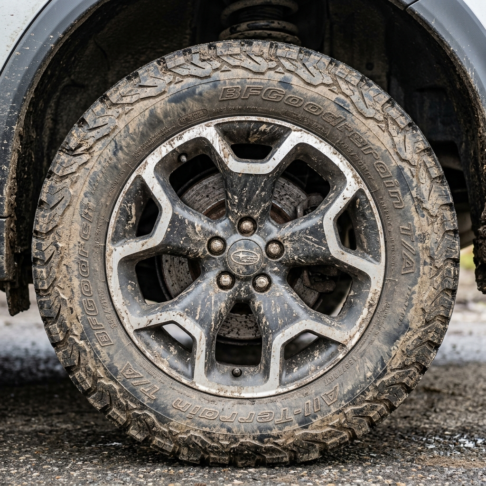

ERGEBNISSE // MEDIA_GALLERY
Einige Eindrücke.



Vergessen Sie Waschstraßen-Bürsten. Unsere professionelle Handwäsche ist die sicherste und gründlichste Art, Ihr Fahrzeug zu reinigen. Wir verwenden nur die hochwertigsten Produkte, um Ihren Lack zu schonen und gleichzeitig maximale Sauberkeit zu erzielen.
Ein dichter Schaum löst den Schmutz an, bevor wir den Lack überhaupt berühren.
Maximale Sicherheit durch Trennung von Schmutz- und Reinigungswasser.
Schonende Trocknung mit ultra-saugstarken Mikrofasertüchern oder gefilterter Druckluft.
Wir reinigen auch die Stellen, die andere übersehen – für ein rundum perfektes Ergebnis.
Waschstraßen verursachen oft feine Kratzer (Swirls). Handwäsche ist lackschonend und erreicht jede Ecke.
Ja, fragen Sie nach unseren Abo-Modellen für die wöchentliche oder monatliche Pflege.

Buchen Sie jetzt Ihre Premium-Handwäsche in Duisburg.
Jetzt Termin anfragen